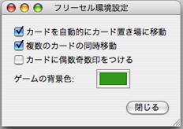

フリーセルのヘルプ
環境設定
環境設定では、ゲームを楽に進めることができるように、次の2つの設定をすることができます。

カードを自動的にカード置き場に移動
ゲームに必要なくなったカードを自動的に右上のカード置き場に動かします。例えば、エースは必ずカード置き場に動かされます。その他のカードも、ゲームと関係なくなったときに自動的に動かされます。
複数のカードの同時移動
複数のカードをある列から別の列に動かすことができます。もちろん、一枚ずつ動かすこともできますが、それは大変です。
 フリーセルのヘルプ
フリーセルのヘルプ